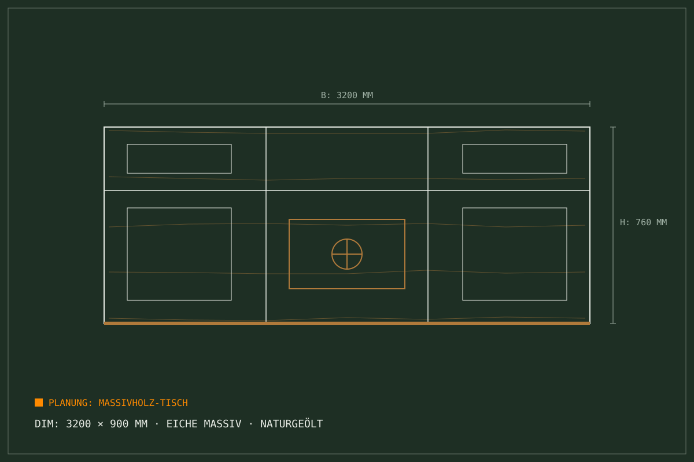
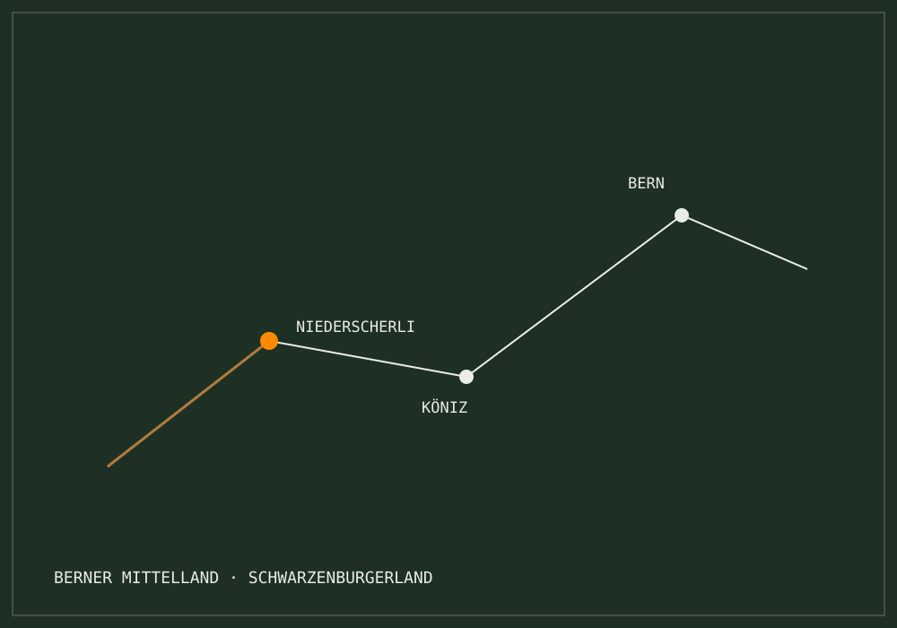

Atelier Niederscherli · Berner Mittelland
Holz, das bleibt.
Seit über
125 Jahren.
Individuelle Küchen, massgefertigter Möbelbau, Fenster, Türen und zertifizierte Petwalk-Spezialanfertigungen — aus der eigenen Werkstatt in Niederscherli bei Bern.

Seit über 125 Jahren inhabergeführtes Schreinerhandwerk im Bernbiet. Erfahrung und Sorgfalt über Generationen.
Keine anonyme Massenware. Komplette Fertigung und Veredelung an der Schwarzenburgstrasse 865 in 3145 Niederscherli.
Offiziell autorisierter Spezialist für wärmegedämmte, einbruchsichere Katzen- und Hundetüren in Glas und Wand.
Werkstatt-Bereiche
Die 6 Werkstatt-Bereiche
Präzise Holzverarbeitung und massgeschneiderte Raumlösungen für Neubau, Umbau und denkmalgeschützte Bauten.
Küchenbau nach Mass
Ergonomische Unikate, langlebige Beschläge, passgenaue Arbeitsplatten und Geräteintegration aus einer Hand.
Details → 02 / MöbelbauMöbelbau & Innenausbau
Einbauschränke bis unter die Decke, repräsentative Esstische aus Massivholz, Garderoben und Stauraumlösungen.
Details → 03 / Fenster & TürenFenster & Türen
Fachgerechte Sanierung von Altbaufenstern, Neubau mit modernem Schall- und Wärmeschutz, widerstandsfähige Haustüren.
Details → 04 / PetwalkPetwalk Hundetüren
Wärmegedämmte Haustier-Eingänge ohne Kältebrücken. Dichte Montage in Isolierglas, Türen und Aussenwände.
Details → 05 / ServiceReparatur & Service
Klemmende Türen, defekte Scharniere, Glasersatz, Kratzer im Parkett oder Einbruchschäden. Rasche Behebung.
Details → 06 / HitzeschutzHitzeschutz & Beschattung
Insektenschutzgitter nach Mass, Holz- und Alulamellen, Rollos sowie Sonnenschutz passend zu jedem Fenster.
Details →AI Modul 2.4 · Demo-Modul
Offerten- &
Planungsassistent
Schritt [01/04] · Kategorie festlegen
Welches Vorhaben möchten Sie realisieren?
Wählen Sie den Schwerpunkt Ihres Projekts. Fritz Gfeller Burgunder fertigt jede Konstruktion individuell — nach Aufmass, in der eigenen Werkstatt.
Schritt [02/04] · Masse & Raum
Wie gross ist Ihr Vorhaben?
Grobmasse genügen — das genaue Aufmass nehmen wir vor Ort. Wählen Sie die passende Grössenordnung.
Einbausituation: Erdgeschoss, Obergeschoss oder Altbau mit schrägen Wänden? Notieren Sie es im vollständigen Assistenten auf der Anfrage-Seite.
Schritt [03/04] · Materialien
Welches Material spricht Sie an?
Alle Materialien können in unserem Atelier in Niederscherli im Original begutachtet werden.
Schritt [04/04] · Zusammenfassung
Ihre Anfrage im Überblick
Diese Vorkonfiguration übernehmen wir in den vollständigen Anfrage-Assistenten — dort ergänzen Sie Fotos und Kontaktdaten.
Ihre Anfrage im Überblick · Auto-synchronisiert
Demo-Modul: Diese Vorkonfiguration wird nicht versendet. Unverbindlich · Direkte Einschätzung · Schweizer Handwerk.
Strukturierter Prozess
So läuft Ihr Projekt
Voranfrage & Beratung vor Ort
Sie nutzen unseren KI-Assistenten oder rufen direkt an. Fritz Gfeller Burgunder kommt persönlich bei Ihnen vorbei und nimmt das Aufmass.
Resultat: Klare Aufgabenstellung & Richtofferte
Werkstattplanung & Zuschnitt
In unserer Werkstatt an der Schwarzenburgstrasse fertigen wir Ihr Unikat an. Mit geschultem Auge wählen wir Holz und Oberfläche.
Resultat: Massgefertigte Schreinerqualität
Saubere Montage & Garantie
Wir montieren pünktlich, staubarm und passgenau bei Ihnen zu Hause. Jeder Spalt sitzt, jede Tür schliesst.
Resultat: Abnahme mit Inhaber-Garantie
Einsatzgebiet
Unser
Einsatzgebiet
Wir bedienen Privatkunden, Architekten und Verwaltungen im gesamten Berner Mittelland — mit Schwerpunkt auf der Region rund um Niederscherli.
Schreinerei Fritz Gfeller AG
Inhaber: Fritz Gfeller Burgunder
- Adresse
- Schwarzenburgstrasse 865 · 3145 Niederscherli
- Telefon
- +41 79 230 97 68
- info@schreinergfeller.ch
Werkstatt & Holzlager direkt an der Schwarzenburgstrasse 865.

Lageplan Niederscherli · Berner Mittelland
Anfrage in 60 Sekunden
Planen Sie ein Projekt nach Mass?
Ob Küchenumbau, Einbauschrank, Haustüre oder Petwalk-Hundetüre: Fritz Gfeller Burgunder berät Sie unverbindlich — in der Werkstatt oder vor Ort bei Ihnen.